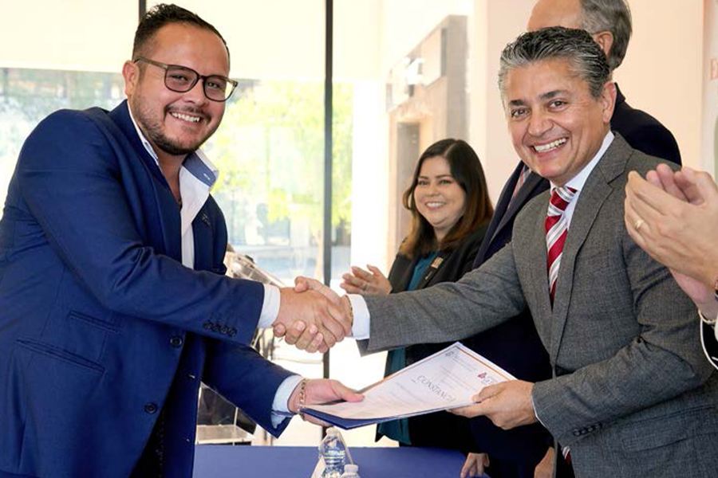
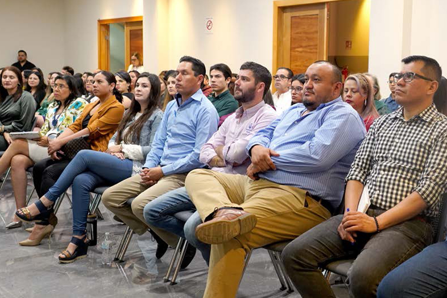
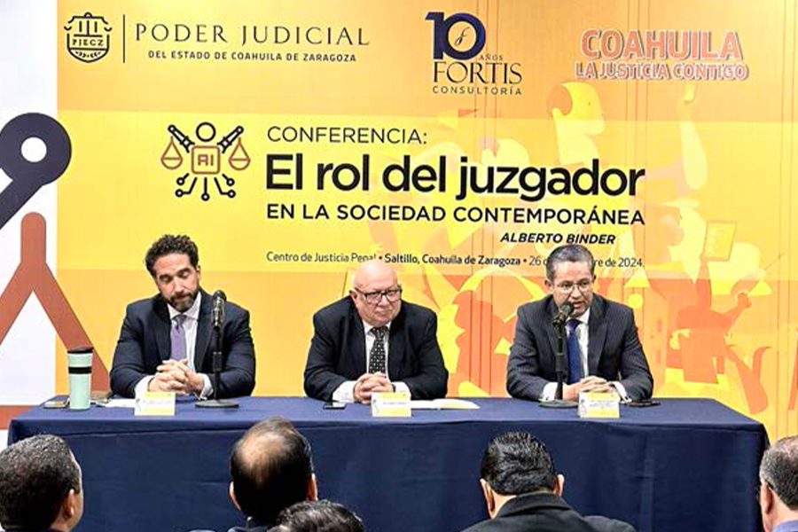
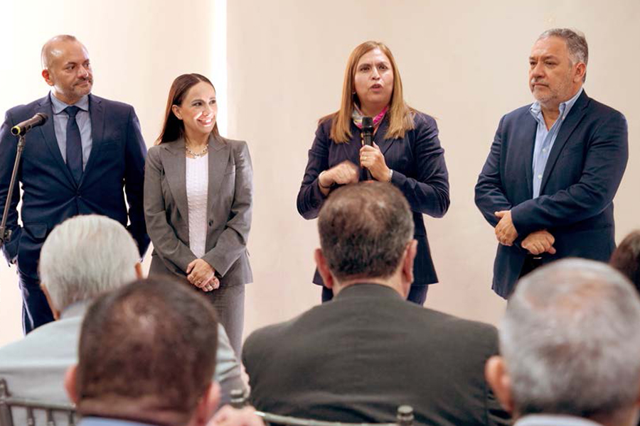
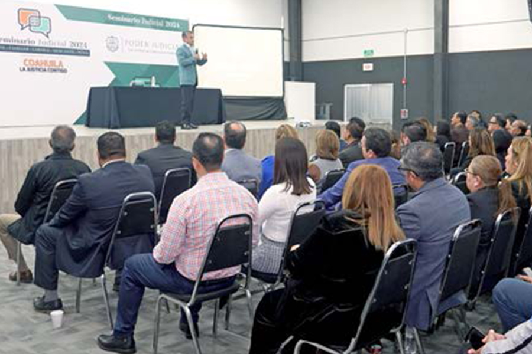
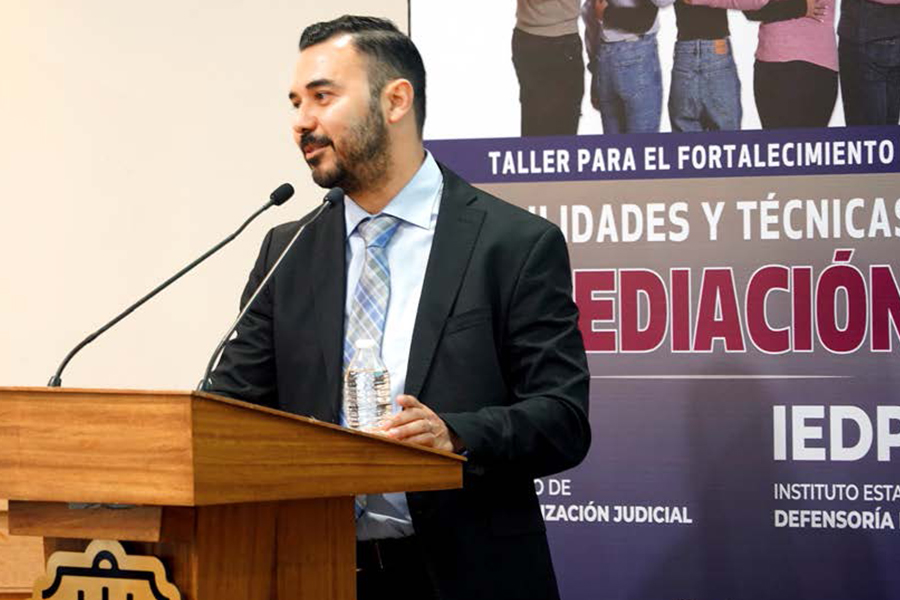
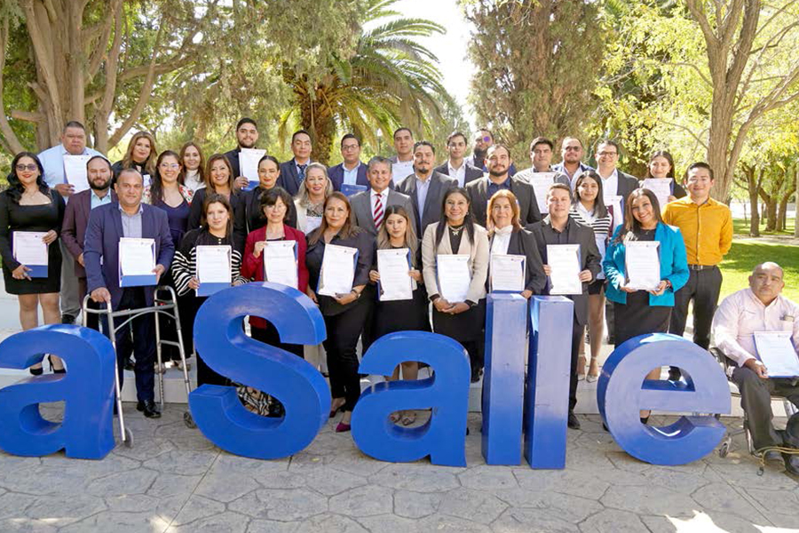
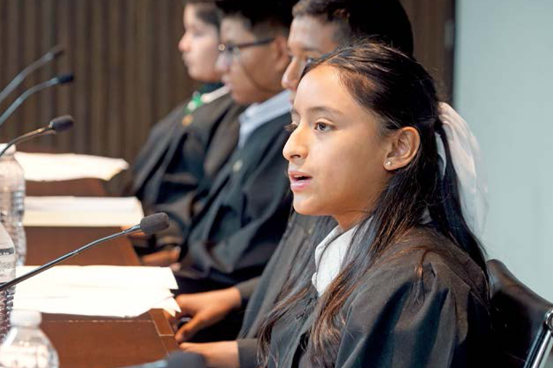
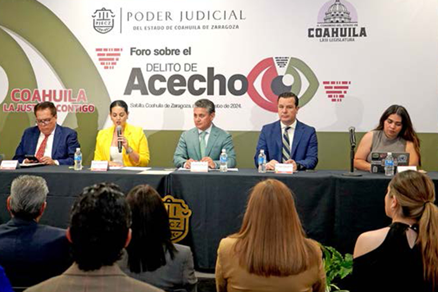
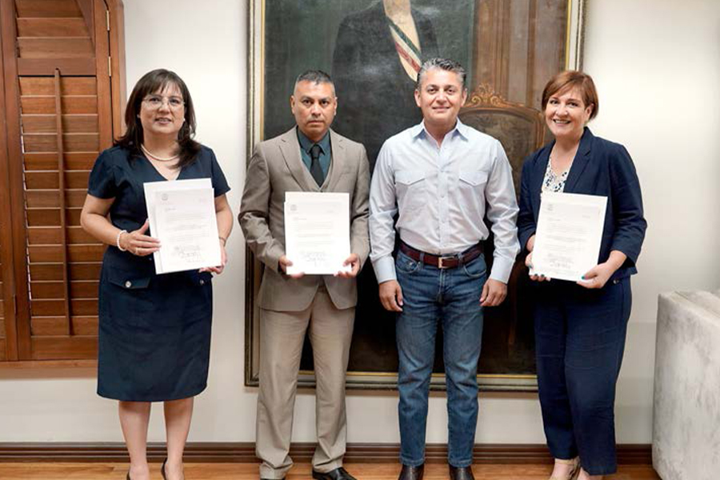

Este 2024 nos fortalecimos académicamente para que nuestro personal cuente con las herramientas necesarias para brindar una justicia humana
Estamos convencidos de que la justicia no solo debe ser imparcial y eficiente, sino también humana y cercana a las necesidades de quienes la requieren. Con cada esfuerzo buscamos construir un Poder Judicial de Coahuila que no solo responda a los retos legales, sino que también sea un agente de cambio social que fomente la inclusión, el respeto a los derechos humanos y el acceso equitativo a la justicia.
Por esa razón, para asegurar que la justicia de calidad llegue a todas las personas, es imprescindible contar con una estructura judicial sólida, profesional, íntegra y con un profundo sentido humano. Entendemos que esta estructura debe estar compuesta por personas con la capacidad y especialización necesaria para enfrentar los retos de un sistema de justicia que responde a las necesidades de la sociedad. Por ello, a través del Instituto de Especialización Judicial, hemos implementado un programa anual de capacitación y mejora continua, que proporciona a nuestro personal las herramientas necesarias para optimizar su desempeño, fortalecer sus conocimientos en las distintas materias y asegurar que puedan ofrecer una justicia acorde a los más altos estándares de calidad.
Nuestro compromiso con una justicia accesible y eficiente también se refleja en la promoción de mecanismos alternativos para la resolución de conflictos. Con el objetivo de acercar a la ciudadanía a soluciones pacíficas y satisfactorias, a través del Centro de Medios Alternos de Solución de Controversias (CEMASC), impulsamos la capacitación y certificación en mediación. Este programa tiene como fin proporcionar a las y los coahuilenses herramientas efectivas para conciliar y resolver disputas en diferentes ámbitos de la sociedad, evitando que estos conflictos escalen a niveles judiciales.

En paralelo, nuestro trabajo en materia de derechos humanos e igualdad de género es un pilar fundamental. A través de la Unidad de Derechos Humanos e Igualdad de Género del Poder Judicial de Coahuila, buscamos incidir en las nuevas generaciones fomentando la cultura de la legalidad y salvaguardando los derechos de las infancias, por esa razón, este año lo instituimos como el año de la justicia al servicio de las niñas y los niños.
Implementamos estrategias para acercarnos a este sector poblacional con diversas actividades como la convocatoria para integrar el primer pleno infantil y la creación de un personaje o avatar que acerque el concepto de justicia a las niñas y los niños. Actualizamos y fortalecimos nuestros protocolos de actuación, los cuales son de observancia obligatoria para todas las personas juzgadoras. Estos protocolos garantizan que el acceso a la justicia se otorgue en condiciones de igualdad, particularmente para los grupos y colectivos históricamente vulnerados. Además, hemos promovido diversas acciones y políticas públicas en materia de género, sentando las bases para la prevención, atención y sanción de actos de violencia, asegurando que el sistema judicial sea un espacio seguro y equitativo para todos, sin importar su género o condición. Instituto de Especialización Judicial
La calidad en la impartición de justicia pasa necesariamente por la permanente profesionalización y especialización de quienes tienen en sus manos la delicada y compleja labor de resolver los conflictos de las personas.
En este sentido, para nosotros es importante garantizar que el Tribunal cuente con las suficientes habilidades y competencias profesionales y humanas para llevar a cabo su trabajo de manera efectiva y eficiente, por lo que realizamos diversas acciones para mejorar el proceso formativo de quienes operan el sistema de justicia, incluso extendiéndolo a la sociedad jurídica en general. Asimismo, nos hemos adaptado a las necesidades sociales, a los cambios jurídicos y a los avances tecnológicos. Por ello, durante 2024 llevamos a cabo 31 actividades académicas –cursos, talleres, diplomados y conferencias– a través de nuestras instancias especializadas, en las que participaron mil 783 personas. Del total de personas capacitadas, 791 pertenecen al Poder Judicial, 638 a otras dependencias gubernamentales, y 354 a abogadas y abogados postulantes.
1. Oferta académica especializada y continua
Durante el año 2024, realizamos un esfuerzo constante para ofrecer programas de formación y profesionalización de alta calidad al funcionariado judicial y demás personas que intervienen en el sistema de justicia.
En este sentido, establecimos relaciones sólidas con instituciones gubernamentales, organizaciones judiciales y académicas, así como la sociedad civil, para la creación de alianzas estratégicas que fortalezcan nuestra capacidad de cumplir nuestra misión, y resulten en la diversificación en la oferta y las modalidades de oportunidades educacionales que brindamos al personal.

La constante evolución del entorno social y jurídico exige una formación continua de las personas operadoras de justicia. En este sentido, estamos convencidos de que es indispensable que todos los profesionales del derecho asimilen nuevos conocimientos, destrezas y habilidades.
or esta razón, asistimos al Primer Encuentro Nacional de Escuelas Judiciales, actividad convocada por la Escuela Federal de Formación Judicial (EFFJ); donde se fortalecieron las redes de colaboración entre quienes dirigen las escuelas judiciales e institutos de formación judicial del país, y se analizaron las actualizaciones, progresos, buenas prácticas y retos en la educación judicial.
Asimismo, con el objetivo de contribuir en la implementación del Sistema Integral de Calidad y Gestión documental, se llevó a cabo capacitación en las áreas administrativas y jurisdiccionales, sobre el sistema informático con el que se lleva el control de documentos, con la finalidad de brindar las herramientas que permitan a nuestro personal fortalecer las buenas prácticas en el desempeño de sus funciones, facilitar la tramitación de los servicios y crear puentes directos de comunicación con las y los justiciables.
De igual forma, autoridades jurisdiccionales en materia civil y familiar sostuvieron una reunión con el Magistrado Eliseo Juan Hernández, Secretario Técnico de la Coordinación del Sistema de Justicia Civil y Familiar (COCIFAM), donde se abordaron diversos temas concernientes al conocimiento, habilidades, destrezas, valores y aptitudes en la implementación de la reforma al Sistema de Justicia Civil y Familiar.

También, llevamos a cabo el Diplomado en el Sistema Integral de Justicia Penal para Adolescentes, en alianza estratégica con la Universidad La Salle campus Saltillo, donde participó un grupo de 46 operadores del Sistema Acusatorio y Oral, conformado por personas juzgadoras y defensoras públicas, para que de esta forma proporcionen una atención integral, diferenciada y especializada a las y los adolescentes en conflicto con la ley sujetos al sistema.
Asimismo, en coordinación con la Sala Colegiada Penal, y con la finalidad de enriquecer y mejorar nuestro sistema jurídico, impartimos capacitación a juezas y jueces de la materia, en la que se analizaron diversos temas como la valoración de la prueba, prueba ilícita, principio de congruencia, exclusión probatoria e incorporación de documentos.
De igual manera, realizamos una capacitación en competencias de juicio, con la finalidad de reforzar las acciones que las personas operadoras del sistema acusatorio y oral deben demostrar en audiencia de juicio para el desahogo de una testimonial convincente, profesional y deontológica, que les permita realizar una participación efectiva y presentar el caso de forma más coherente y persuasiva al Tribunal de Enjuiciamiento.
Además, en coordinación con el Instituto de Defensoría Pública de Nuevo León, impartimos el curso de capacitación enfocado en etapa intermedia, etapa de ejecución y sanciones penales, con el objetivo de fortalecer la formación y actualización del personal del Instituto Estatal de Defensoría Pública del Estado de Coahuila de Zaragoza.

En esa misma línea, en colaboración con el Programa de Capacitación Internacional para la Investigación Criminal (ICITAP, por sus siglas en inglés) perteneciente al Departamento de Justicia de Estados Unidos (DOJ, por sus siglas en inglés), juezas y jueces en materia penal impartieron capacitación a peritos, agentes del Ministerio Público y personal de la Fiscalía General del Estado de Coahuila.
Por otra parte, en coordinación con la Unidad de Derechos Humanos e Igualdad de Género, en colaboración con la Agencia de los Estados Unidos para el Desarrollo Internacional (USAID), realizamos el taller de fortalecimiento "Aplicación de la perspectiva de género y el enfoque GESI en la administración de justicia", con el objetivo de fortalecer las capacidades de las personas juzgadoras, donde se abordaron temas como la identificación de problemas de género e inclusión social, argumentación en la conducción de audiencias y perspectiva de género en la emisión de resoluciones judiciales.
Finalmente, llevamos a cabo el taller de manejo de audiencias “Lenguaje Ciudadano México”, con la finalidad de potenciar las competencias que permiten dirigir audiencias judiciales y emitir resoluciones con lenguaje claro y accesible, la cual fue impartida por el doctor Carlos Núñez Núñez, juez penal y especialista de la
Escuela de Formación Judicial de Costa Rica.
El enfoque de derechos humanos y la perspectiva de género han sido y serán pilares para continuar fortaleciendo su respeto y protección en todos los servicios brindados en el Poder Judicial, para garantizar el acceso a la justicia de todas las personas.
En materia de justicia alternativa, junto a USAID, impartimos el Curso de Fortalecimiento de Habilidades y Técnicas de Mediación, dirigido a personas defensoras públicas, con el propósito de hacer efectivo el involucramiento de la sociedad y generar su confianza hacia los mecanismos alternativos, abonar a la consolidación de procedimientos basados en el diálogo, los acuerdos, la reparación del daño y el compromiso de no repetición.
Con el objetivo de establecer procedimientos de justicia restaurativa y mecanismos alternativos de solución de controversias, con un enfoque sistémico y colaborativo que involucre a múltiples actores, impartimos el curso de Mediación autogestivo, el cual estuvo dirigido a personas servidoras públicas del Poder Judicial, a organizaciones de la sociedad civil y comunidades locales.
La difusión del conocimiento legal es una parte esencial de nuestra misión, por lo que en el marco de nuestro convenio de colaboración con la Universidad La Salle campus Saltillo, llevamos a cabo estadías en órganos jurisdiccionales en materia familiar y mercantil, en las que participaron 23 estudiantes de la licenciatura en Derecho, contribuyendo con ello en su formación educativa y profesional.
Durante el 2024, continuamos con la impartición de la licenciatura en Derecho en la modalidad en línea, acción que beneficia a 483 personas que al día de hoy forman parte de la primera, segunda y tercera generación que cursa su educación profesional en la ciencia jurídica. Esta actividad se deriva de la alianza estratégica entre el Poder Judicial, el Gobierno del Estado de Coahuila de Zaragoza, el Congreso del Estado, la Auditoría Superior del Estado, así como la Facultad de Contaduría y Administración en la Unidad Torreón de la Universidad Autónoma de Coahuila.
Finalmente, como parte de las acciones de planeación e implementación de un nuevo modelo de gestión judicial, se llevó a cabo la conferencia “El rol del juzgador en la sociedad contemporánea”, impartida por el doctor Alberto Binder, Presidente del Instituto de Estudios Comparados en Ciencias Penales (INECIP), con el objetivo de sensibilizar sobre la independencia judicial, la confianza ciudadana y los retos de la administración de justicia de calidad en la sociedad democrática, en el contexto de la Reforma Judicial en México. En dicha conferencia participaron 76 personas adscritas al Poder Judicial, y seis personas externas a la institución.
A medida que avanzamos hacia el futuro reafirmamos nuestro compromiso de seguir siendo un referente en la formación y desarrollo de operadores del sistema de justicia, y de mantenernos a la vanguardia en la promoción de la justicia y el Estado de Derecho.
Tabla 43. Personas capacitadas por el Instituto de Especialización Judicial
| . | . | . | . | . | Personas | . | . | . | . | . | . | . | . |
|---|---|---|---|---|---|---|---|---|---|---|---|---|---|
| . | . | . | . | . | 2024 | . | . | . | . | . | . | . | . |
| Materia | Actividades | PJECZ | M | H | Otras dependencias | M | H | Litigantes | M | H | Total mujeres | Total hombres | Total |
| Capacitación Básica | 10 | 221 | 116 | 105 | 69 | 29 | 40 | 0 | 0 | 0 | 145 | 145 | 290 |
| CEMASC | 6 | 158 | 107 | 51 | 12 | 7 | 5 | 0 | 0 | 0 | 114 | 56 | 170 |
| Civil y Familiar | 7 | 406 | 259 | 147 | 4 | 4 | 354 | 172 | 182 | 435 | 329 | 764 | |
| DDHH y Género | 1 | 21 | 15 | 6 | 33 | 30 | 3 | 0 | 0 | 0 | 45 | 9 | 54 |
| Especializada y Carrera Judicial | 5 | 44 | 30 | 14 | 446 | 248 | 198 | 0 | 0 | 0 | 278 | 212 | 490 |
| Penal | 9 | 203 | 110 | 93 | 80 | 37 | 43 | 0 | 0 | 0 | 147 | 136 | 283 |
| Total | 38 | 1,053 | 637 | 416 | 644 | 355 | 289 | 354 | 172 | 182 | 1,164 | 887 | 2,051 |
Fuente: Instituto de Especialización Judicial. Poder Judicial del Estado de Coahuila de Zaragoza. 2024.
Seminario Judicial

En el marco de la Reforma Judicial, el 18 de diciembre realizamos el Seminario Judicial 2024, en el que a través de la reflexión conjunta, el diálogo abierto y constructivo, se presentaron y analizaron las adecuaciones en la Constitución local y en la normativa secundaria para garantizar la correcta aplicación de dicha reforma en el Estado, con el objetivo de asumir con responsabilidad las acciones que habrán que llevarse a cabo para materializar esta reforma, y responder de manera efectiva a las demandas de justicia de la ciudadanía coahuilense.
El seminario contó con la participación de 127 personas adscritas al Poder Judicial, entre juezas, jueces y personal directivo.
Capacitación del Instituto Estatal de Defensoría Pública
En el IEDP sabemos que el desarrollo profesional y la especialización continua están dirigidas a asegurar que los conocimientos y destrezas adquiridas, se traduzcan en un trabajo efectivo ante los órganos jurisdiccionales, estas actividades son herramientas que nos permiten garantizar el ejercicio de los derechos de nuestros usuarios, a través de alcanzar eficiencia institucional y mejorando la perspectiva sobre la impartición de justicia y el desempeño profesional.
Priorizamos la programación de actividades y la oferta de capacitación en función de lineamientos estratégicos, para la mejor utilización de los recursos, gestionamos el intercambio de programas académicos con diversas instancias, como el Instituto de Especialización Judicial, nuestros homólogos de otras entidades y JAVA como filial de USAID.
Durante 2024, estas acciones de formación comprendieron capacitaciones sobre temas sensibles como violencia contra la mujer, de mediación y en materia penal, civil y familiar; asistimos a dos diplomados y cuatro cursos, capacitando a 249 personas de nuestra institución, además, 115 defensores obtuvieron la Certificación en Mediación y Conciliación.
Tabla 44. Capacitación del IEDP
| Tema | Participantes |
|---|---|
| Asistencia a Diplomado de Justicia para Adolescentes. | 37 |
| Asistencia a Diplomado Nuevo Código Civil y Familiar. | 56 |
| Asistencia a curso Mediación y Suspensión Condicional a Proceso, impartido por USAID. | 55 |
| Impartición sobre temas de técnicas de litigación y etapa intermedia | 6 |
| Asistencia a capacitación en materia de ejecución de sanciones penales. | 10 |
| Impartición de Capacitación sobre Juzgados Especializados en Violencia contra la Mujer en Mexicali Baja California. | 50 |
| Asistencia a Capacitación por la Defensoría Pública de Nuevo León en etapa intermedia y Ejecución Penal. | 35 |
| Total | 249 |
Fuente: Instituto Estatal de Defensoría Pública. Poder Judicial del Estado de Coahuila de Zaragoza. 2024.
Capacitación en Medios Alternos de Solución de Controversias
Los Medios Alternativos de Solución de Controversias permiten que las personas puedan enfrentar sus conflictos cotidianos de manera pacífica y efectiva. Además, estos mecanismos ayudan a reducir la sobrecarga de los tribunales, evitando al máximo posible la judicialización de los conflictos y ofreciendo soluciones más ágiles, accesibles y adecuadas a las necesidades de las personas involucradas.
Por esta razón, en el Poder Judicial de Coahuila uno de nuestros objetivos principales consiste en la capacitación del capital humano que integra el Centro, de ahí que, programamos diversos cursos y diplomados con la finalidad de desarrollar las competencias y actualizar la formación que se requiere para el desempeño de sus funciones.
Estamos conscientes que la educación en mediación es una herramienta poderosa que puede transformar la manera en que las personas resuelven sus diferencias, promoviendo una cultura de paz y diálogo en todos los niveles de la sociedad; por ello, como parte de nuestro compromiso institucional, también implementamos diversos cursos de formación en mediación escolar, dirigidos a personal docente de educación básica y media, alumnas y alumnos, y padres de familia, y en mediación comunitaria, para que la ciudadanía tenga la oportunidad de formarse en la resolución de conflictos.
Estos programas están diseñados para proporcionar a los participantes las herramientas necesarias para mediar en conflictos y contribuir al fortalecimiento del tejido social. En el último periodo estos cursos han contado con la participación de 276 personas.
De esta manera, el Poder Judicial de Coahuila continúa trabajando para ampliar la oferta educativa y seguir promoviendo la justicia alternativa como una herramienta fundamental para una sociedad más justa, equitativa y con paz social.


Certificación en mediación y conciliación
La trascendencia de certificar a mediadores y conciliadores que puedan desempeñarse en el ámbito público y privado, radica en incrementar los servicios de justicia alternativa, con la finalidad de que conflictos que puedan resolverse mediante el diálogo no lleguen a los tribunales, evitando además que controversias entre familiares o vecinos, por situaciones cotidianas, adeudos o prestación de servicios, escalen en niveles de violencia con consecuencias de compleja reparación.
Por esa razón, el Poder Judicial de Coahuila, a través del Centro de Medios Alternos de Solución de Controversias (CEMASC), ofrece una certificación a todas las personas servidoras públicas a nivel municipal o estatal, así como a personas físicas que tienen el interés de desempeñarse en los servicios de mediación y conciliación.
A través de mecanismos como la mediación, la conciliación, negociación y justicia alternativa, así como en perspectiva de género, ofrecemos a las personas participantes una forma distinta de abordar y resolver los problemas y conflictos, adaptándose a las necesidades de las partes involucradas.
Durante 2024 implementamos tres procesos ordinarios que delinean el protocolo estándar de certificación en mediación, junto con tres procesos extraordinarios, destinados a certificar tanto a servidores públicos a nivel estatal o municipal, como a profesionales del ámbito privado.
Como resultado de estos esfuerzos, 152 personas lograron obtener con éxito la certificación, validando su competencia a lo largo de cada una de las tres etapas correspondientes del proceso de certificación.
Unidad de Derechos Humanos e Igualdad De Género
La Unidad de Derechos Humanos e Igualdad de Género, adscrita a la Secretaría Técnica y de Transparencia, es la instancia administrativa responsable de fomentar el respeto y cumplimiento de los derechos humanos, así como de integrar de manera transversal la perspectiva de género en las actividades jurisdiccionales y administrativas del Poder Judicial del Estado de Coahuila.

Durante este año 2024, al ser designado como el de la justicia al servicio de las niñas y los niños, llevamos a cabo diversas actividades para promover conocimiento sobre la justicia y sus derechos. Emitimos la convocatoria “Magistrada y Magistrado por un día”, en la que se seleccionaron a 13 niñas y niños para formar parte del Pleno del Tribunal Superior de Justicia del Estado de Coahuila de Zaragoza, y participaran en la sesión de Pleno en las instalaciones del Palacio de Justicia en Saltillo.
De igual manera, anunciamos la apertura de la convocatoria “Justicia para ti, Diseña nuestro personaje”, en la que se eligió un diseño de un personaje o avatar que representará las actividades de la institución dirigidas a las niñas y niños, además de estar en el micrositio del Poder Judicial.
Como parte del trabajo de colaboración en pro del interés superior de la niñez, llevamos a cabo diversas reuniones de trabajo con el Sistema Nacional para el Desarrollo Integral de la Familia de Coahuila y los Centros de Atención e Integración Familiar (CAIF). Asimismo, realizamos conversatorios entre personal del Poder Judicial en materia familiar, y los juzgados especializados en violencia familiar y el personal de los CAIF de cada distrito judicial del Estado. El objetivo de estas reuniones fue la capacitación, coordinación y organización, así como la unificación en los procesos que involucran a ambas instituciones.
Celebramos la firma del convenio de colaboración entre este poder público, el Tribunal Electoral de Coahuila y el Instituto Electoral de Coahuila, con el objetivo de establecer el compromiso para verificar que las personas aspirantes a cargos de elección popular no hayan incurrido en actos u omisiones que atenten contra la integridad y los derechos de mujeres, niñas, niños y adolescentes. A través de esta alianza, reafirmamos el compromiso institucional con la justicia, la transparencia y la construcción de una sociedad más segura y equitativa para todas las personas.
Asistimos al encuentro con Unidades de Género del Gobierno del Estado, donde participamos en la Firma del Compromiso por una Igualdad Sustantiva. Este evento representó una valiosa oportunidad para fortalecer la colaboración interinstitucional en la promoción de la igualdad de género y la inclusión.
En el marco de la conmemoración del Día Internacional de la Mujer, asistimos a la ceremonia de presentación de la Estrategia Integral para las Mujeres Coahuilenses del Gobierno del Estado. También, llevamos a cabo la conferencia “Transversalización del Enfoque de Género: Experiencia en los Poderes Judiciales Locales”, impartida por Sandra Vázquez, líder del Componente de Administración de Tribunales de ConJusticia de USAID.
En un esfuerzo por fortalecer el diálogo y la cooperación, trabajamos estrechamente con diferentes colectivos sociales, como lo es el Colectivo Madres Poderosas de Torreón, impulsando soluciones integrales a sus problemáticas. Como parte de la atención integral brindada en las reuniones, contamos con la presencia de diversas instituciones como el Instituto Estatal de Defensoría Pública del Poder Judicial del Estado, Fiscalía General del Estado, Fiscalía de las Mujeres y Niñez, Procuraduría para Niños, Niñas y la Familia (PRONNIF), Comisión Ejecutiva Estatal de Atención a Víctimas (CEEAV), Centro de Justicia y Empoderamiento de las Mujeres, la Comisión de los Derechos Humanos del Estado de Coahuila, así como diversas dependencias del Gobierno del Estado. Además, colaboramos activamente con los colectivos Alas de
Esperanza, Colectivo Vasta y Frente Nacional contra la Violencia Vicaria.
Ante la reciente tipificación del delito de acecho, en colaboración con el Congreso del Estado y la Fiscalía, llevamos a cabo el conversatorio “El acecho como detonante de delitos de alto impacto”. En este espacio se abordaron las particularidades de este delito, desde los elementos considerados al momento de su legislación, hasta los criterios aplicados en su juzgamiento. Se profundizó en el proceso de investigación llevado a cabo por la Fiscalía, en la distinción entre conductas que constituyen acecho y aquellas que no lo son, así como en otros temas relevantes relacionados con este delito.

Asimismo, organizamos el Foro sobre el Delito de Acecho, con el objetivo de sensibilizar tanto a personas servidoras públicas como a la sociedad civil sobre este delito, su investigación y sanción. En este evento contamos con la valiosa participación de magistrados del Poder Judicial del Estado de Guanajuato, y de la presidenta de la organización "Nosotros para Ellas", quienes compartieron sus perspectivas y experiencias para enriquecer el análisis y promover una comprensión más profunda de este fenómeno.
Finalmente, desarrollamos diversas campañas en redes sociales para sensibilizar y concientizar sobre la violencia contra la mujer. Entre las publicaciones que compartimos, se encuentra la campaña por los 16 días de activismo contra la violencia de género. La campaña tuvo como objetivo crear conciencia sobre cómo las palabras y las microagresiones pueden constituir formas de violencia, destacando su impacto en las personas y la importancia de erradicarlas para construir una convivencia basada en el respeto y la dignidad.
Recursos Humanos
Durante el año 2024, la Dirección de Recursos Humanos de la Oficialía Mayor del Poder Judicial del Estado de Coahuila, ha llevado a cabo diversas acciones orientadas a la administración eficiente del capital humano, garantizando el adecuado funcionamiento de las áreas y la atención de las necesidades del personal.
Las y los servidores públicos que integran el Poder Judicial de Coahuila, son la pieza fundamental para dar cumplimiento a las funciones encomendadas. Este año, la plantilla laboral está conformada por mil 943 personas, de las cuales mil 255 son mujeres y 688 hombres. De la totalidad de las plazas, las mujeres representan el 65 por ciento del total de la institución, mientras que los hombres el 35 por ciento.
Estos datos reflejan un compromiso del Poder Judicial con la inclusión y la promoción de la participación de las mujeres en los diversos niveles y áreas de la institución.
Movimientos de personal
Durante el periodo que se informa llevamos a cabo un total de 374 movimientos de personal, clasificados de la siguiente manera: un magistrado distrital, 13 jueces de primera instancia, nueve juezas de primera instancia, 16 secretarios, 44 secretarias, 14 actuarios, 38 actuarias, 10 defensores o asesores jurídicos, 17 defensoras o asesoras jurídicas, y 212 de personal administrativo sustantivo y de apoyo (73 hombres y 139 mujeres).
Con estas acciones aseguramos el cumplimiento cabal de nuestra función, al contar con el personal necesario en los distintos órganos jurisdiccionales y áreas administrativas.
Tabla 45. Movimientos de personal
| Tipo de movimiento | Tipo de designación | Tipo de cargo | Número |
|---|---|---|---|
| Suplencias externas | Definitiva | Judicial y Administrativo | 183 |
| Suplencias externas | Interina sujeta a una temporalidad | Judicial y Administrativo | 13 |
| Suplencias externas | Interinas hasta en tanto se realice el debido procedimiento de selección | Judicial | 21 |
| Promoción | Interina sujeta a una temporalidad | Judicial y Administrativo | 28 |
| Promoción | Interina hasta en tanto se realice el debido procedimiento de selección | Judicial | 22 |
| Promoción | Definitiva | Judicial | 32 |
| Promoción | Definitiva | Administrativa | 13 |
| Cambio de adscripción | Personal con cargo jurisdiccional | Judicial | 38 |
| Cambio de adscripción | Personal con cargo administrativo | Administrativo | 24 |
Fuente: Dirección de Recursos Humanos de la Oficialía Mayor. Poder Judicial del Estado de Coahuila de Zaragoza. 2024.
Reestructuración de órganos jurisdiccionales, no jurisdiccionales y administrativos
Con el objetivo de responder a las necesidades operativas de la institución y fortalecer áreas clave para garantizar una impartición de justicia eficiente y de calidad, en el Poder Judicial de Coahuila realizamos diversos movimientos en áreas jurisdiccionales y administrativas de la institución.
Al cierre del 2024, nuestra plantilla está distribuida de la siguiente manera: de las mil 943 personas que integran este poder, 89 por ciento se desempeña en el área jurisdiccional, y el 11 por ciento restante en áreas administrativas.

Creación de órganos
Para mejorar los servicios que la institución presta a la ciudadanía, asegurando una administración eficiente y equitativa, durante el 2024 fortalecimos los siguientes órganos jurisdiccionales, no jurisdiccionales y administrativos, con el reacomodo y asignación de personal:
Realizamos la asignación de 20 plazas adicionales a los Tribunales Laborales, con el objetivo de fortalecer la operatividad y capacidad de respuesta de esta área.
Incrementamos el personal del Centro de Evaluación Psicosocial, con 23 plazas adicionales para atender la creciente demanda de evaluaciones y garantizar la atención adecuada en esta área de apoyo a la jurisdiccional.
Para salvaguardar los derechos laborales del personal adscrito a este Poder, realizaron ajustes y asignaciones estratégicas de trabajadores en la Dirección de Nóminas, para garantizar una gestión eficiente y oportuna de los recursos financieros destinados al pago del personal.
Finalmente, robustecimos los Juzgados Penales Acusatorios y Orales con personal administrativo, para mejorar los procesos internos y asegurar el correcto desarrollo de los procedimientos judiciales en esta materia.

Beneficios al personal
Continuamos con las estrategias para mejorar las condiciones laborales de las y los funcionarios adscritos al Poder Judicial de Coahuila, con el otorgamiento de préstamos personales con un interés bajo y facilidades de descuento por nómina, por lo que este año se autorizaron 388 préstamos por un monto superior a los 14.1 millones de pesos.

Además, a efecto de que tanto nuestro personal como su familia cuente con protección médica, continuamos con las facilidades para la contratación de un seguro de gastos médicos o seguro de vida a un precio preferencial.